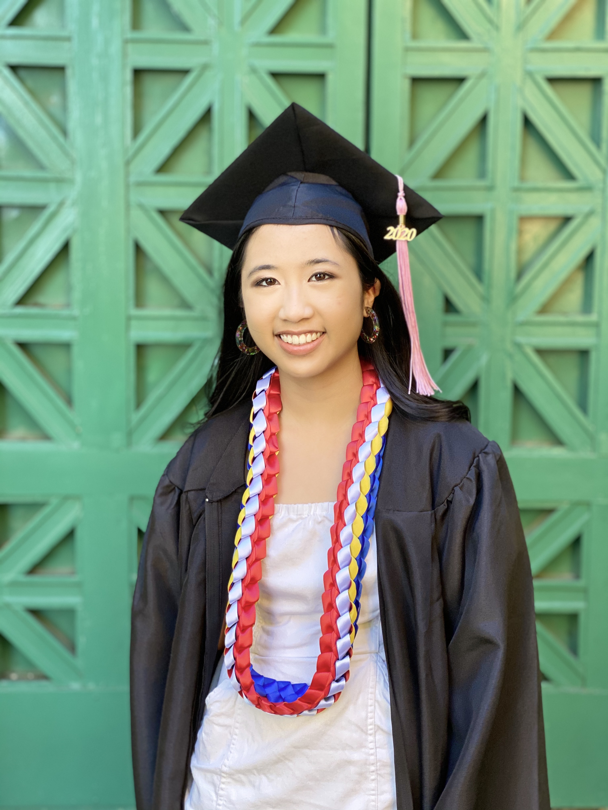
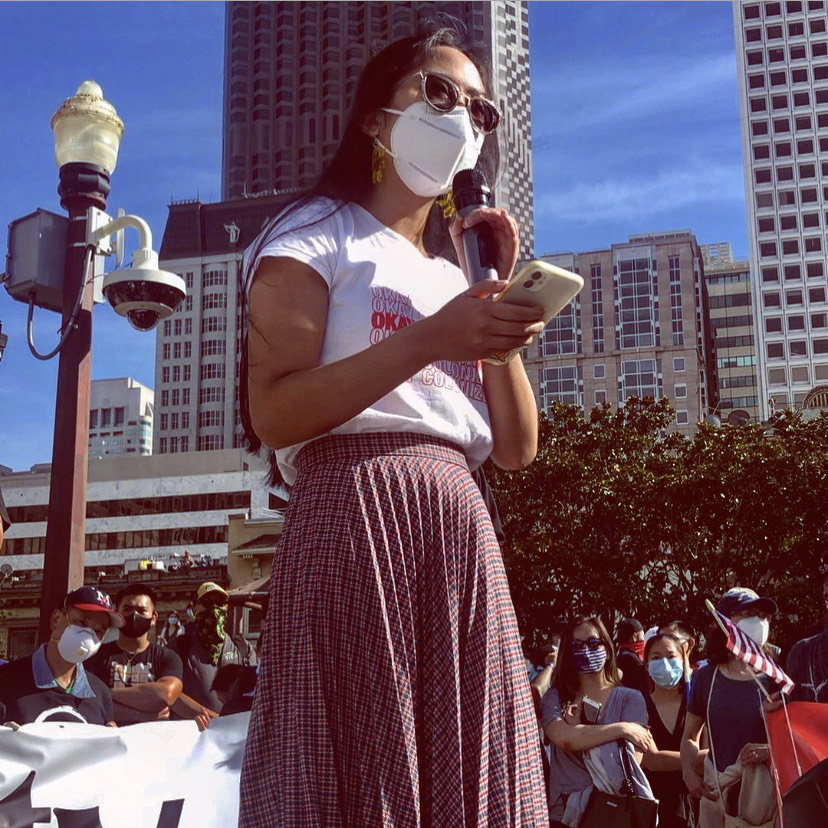
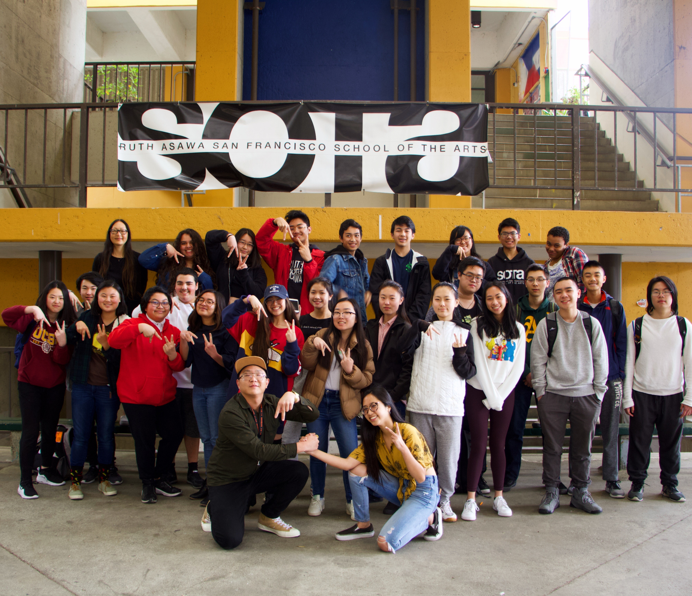
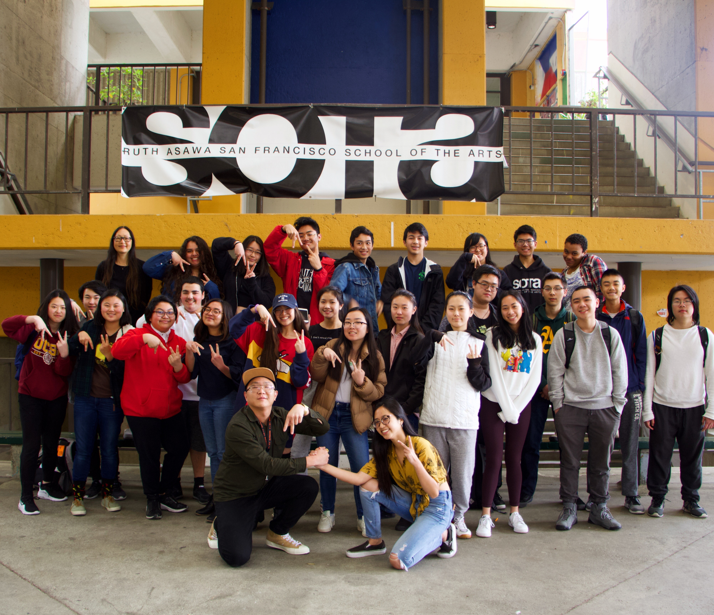

Jaden De La Cruz
Hi! My name is Jaden De La Cruz.
I'm a first-year attending University of California, Riverside.
I am majoring in Sociology. Some fun facts about me are that I
am from San Francisco, I love dogs, video games, singing,
and I love getting boba.
I chose sociology because I am interested in social justice work and
am a person who thrives in social situations. I have gotten to attend
multiple rallies, protests, and walkouts at a young age being from San Francisco.
I also had the privilege in being chosen to give a speech at the They Can't
Burn Us All Rally in September of 2020, which was a rally for raising
awareness and fostering solidarity for the anti-Asian sentiment and
hate crimes toward the Asian community.
I especially enjoy learning studies like ethnic studies,
gender and sexuality studies, and other similar areas of education.
I enjoy qualitative work and research, and I am best
in my element in discussin and collaboration with my colleagues.
I also do my best to keep a positive and enthusiastic attitude.
Some of my strengths include an ability for cooperation and teamwork,
good communicative and social skills, and a good work ethic. I also
have leadership experience. I was a co-founder and elected president
of the Asian student union in my high school, Asians United. I delegated
responsibilites across fellow cabinet members, set the weekly agenda,
maintained a positive and welcoming club atmosphere, represented the union
in administrative settings, and served as the leader for one year. I also
was given leadership roles in my choral ensemble.
Experience
President
• Co-founder and president of Asian student union
• Delegated responsibilites and oversaw cabinet members
• Set the weekly agenda and planned for the future
• Maintained a welcoming atmosphere for members
• Lead union meetings
• In charge of union events
• Represented the union in external affairs
Youth Intern
• Worked with fellow youth interns
• Went through training and education of philanthropy
• Developed solutions with youth interns for social issues
Library Volunteer
• Cleaned up the library and the books
• Set up materials needed for library events
• Sorted books and did other small tasks
Education
UC Riverside
Portfolio




